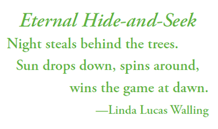
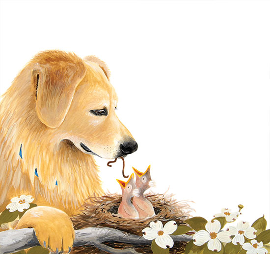

Monthly Activities
- GetSet4K Monthly Calendars - The Charlotte-Mecklenberg County Public Library (NC) provides a helpful month-by-month guide to school readiness.
- Reading is Fundamental Monthly Activity Calendars - These activity calendars provide engaging reading and writing activity suggestions to last an entire month.
Websites to Explore
- Chateau Meddybemps - Check out the Parent’s Guide to see how you can use this site to develop language, reading, and social skills.
- StoryPlace: The Children's Digital Library - At this children's website by the Public Library of Charlotte & Mecklenburg County, kids can listen to interactive children's stories, play with online activities, print out take-home activities, reading lists and more.
Books to Read
- Abigail the Whale by Davide Cali; art by Sonja Bougaeva
- Along the River by Vanina Starkoff; translated by Jane Springer
- And Then it's Spring by Julie Fogliano; illustrated by Erin E. Stead
- Apples and Robins by Lucie Félix
- The Bad Seed by Jory John; illustrated by Pete Oswald
- Beach Baby by Laurie Elmquist; illustrated by Elly MacKay
- A Beach Tail by Karen Lynn Williams
- Bears and Blossoms by Shirley Parenteau; illustrated by David Walker
- Bella's Fall Coat by Lynn Plourde; illustrated by Susan Gal
- Best in Snow by April Pulley Sayre
- Bug Lab for Kids by John W. Guyton
- Cloudette by Tom Lichtenheld
- Cookie Monster's Foodie Truck: A Sesame Street Celebration of Food by Heather E. Schwartz
- Cooking Class: 57 Fun Recipes Kids Will Love to Make (and Eat!) by Deanna F. Cook; photography by Julie Bidwell; illustrated by Emily Balsley
- Do I Have to Wear a Coat? by Rachel Isadora
- The Earth Gives More by Sue Fliess, illustrated by Christiane Engel
- Errol's Garden by Gillian Hibbs
- Farmer Falgu Goes Kite Flying by Chitra Soundar
- Froggy Builds a Snowman by Jonathan London
- Full of Fall by April Pulley Sayre
- Goodbye Summer, Hello Autumn by Kenard Pak
- Hello Autumn! by Shelley Rotner
- It's St. Patrick's Day! by Richard Sebra
- Jabari Jumps by Gaia Cornwall
- The Jacket I Wear in the Snow by Shirley Nietzel
- Joseph Had a Little Overcoat by Simms Taback
- Khalil and Mr. Hagerty and the Backyard Treasures by Tricia Springstubb; illustrated by Elaheh Taherian
- Kite Day: a Bear and Mole Story by Will Hillenbrand
- Leaf Man by Lois Ehlert
- Leo Can Swim by Anna McQuinn
- Let's Look at Winter: a 4D Book by Sarah L. Schuette
- Little Kids First Big Book of Weather by Karen de Seve
- Little Squirrel by Britta Teckentrup
- Lola Plants a Garden by Anna McQuinn
- The Most Perfect Snowman by Chris Britt
- One Hot Summer Day by Nina Crews
- One Leaf, Two Leaves, Count with Me! by John Mickolos Jr.; illustrated by Clive McFarland
- Plant the Tiny Seed by Christie Matheson
- Plants Can't Sit Still by Rebecca Hirsch; illustrated by Mia Posada
- Pumpkin Day! by Candice Ransom
- Rain by Linda Ashman; illustrated by Christian Robinson
- Red Sings From Treetops; A Year in Colors by Joyce Sidman; illustrated by Pamela Zagarenski
- The Runaway Bunny by Margaret Wise Brown; illustrated by Clement Hurd
- Señorita Mariposa by Ben Gundersheimer (Mister G); illustrated by Marcos Almada Rivero
- Shanté Keys and the New Year's Peas by Gail Piernas-Davenport; illustrated by Marion Eldridge
- A Song for All Seasons by Margaret Wise Brown
- Splish, Splash, Splat! by Rob Scotton
- The Squirrel’s Busy Year by Martin Jenkins
- Squirrel's New Year's Resolution by Pat Miller; illustrated by Kathi Ember Shanté
- St. Patrick's Day Crafts by Ann Malaspina; illustrated by Mernie Gallagher-Cole
- The Sun Is Kind of a Big Deal by Nick Seluk
- Tap the Magic Tree by Christie Matheson
- Ten Magic Butterflies by Danica McKellar
- A Thousand White Butterflies by Jessica Betancourt-Perez and Karen Lynn Williams
- Time for Spring by Crockett Johnson
- The Tiny Seed by by Eric Carle
- Treecology: 30 Activities and Observations for Exploring the world of trees and Forests by Monica Russo; photographs by Kevin Byron
- Up, Down, and Around by Katherine Ayres
- The Very Last Leaf by Stef Wade
- A Way with Wild Things by Larissa Theule; illustrated by Sara Palacios
- We are the Gardeners by Joanna Gaines and kids; illustrated by Julianna Swaney
- Weather by Tedd Arnold
- What This Story Needs is a Munch and a Crunch by Emma J. Virján
- When Autumn Falls by Kelly Nidey; illustrated by Susan Swan
- Where is the Sun? by Eric Carle
- Winter Bees & Other Poems of the Cold by Joyce Sidman; illustrated by Rick Allen
- Winter is the Warmest Season by Lauren Stringer
- The Wonderful Habits of Rabbits by Douglas Florian; illustrated by Sonia Sanchez
- You Are My Sunshine by Jimmie Davis; illustrated by Caroline Jayne Church
- You Wouldn't Want to Live Without Trees! by Jim Pipe; illustrated by Mark Bergin
- Zora's Zucchini by Katherin Pryor; illustrated by Anna Raff
Read & Rhyme


Original artwork by Helen Correll